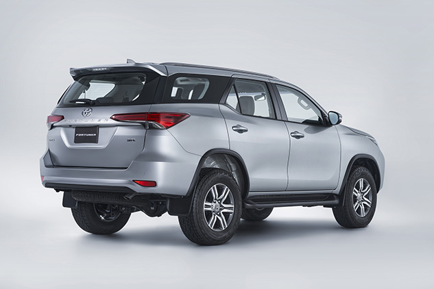

El diseño exterior de la Nueva FORTUNER es la combinación perfecta de fuerza y sofisticación. Esta refleja su firma en las líneas que acompañan su diseño lateral, la dureza es resaltada por la cintura del vehículo, que se origina en los faros delanteros, se extiende a través de las puertas y se proyecta en la curva del paso de la rueda para finalmente integrarse con los stops y así lograr una silueta dinámica y atlética. El conjunto de faros delanteros y luces traseras LED aporta tecnología y refinamiento a las líneas del vehículo. El bumper se proyecta como un trapezoide ridimensional que ha sido renovado para enfatizar la longitud del vehículo gracias a su ancho y a su apariencia alargada.
Su diseño absolutamente auténtico está delineado por finas formas y detalles destacados que logran el balance entre lo elegante y funcional.FORTUNER tiene el espacio y la comodidad necesarios para acomodar pasajeros y equipaje con tranquilidad. Cuenta con siete asientos, su tercera fila permite adaptarse fácilmente a las necesidades de espacio interior gracias a su sistema de un toque, ya que al plegar los asientos se aumenta la capacidad de almacenamiento.
La dureza es resaltada por la cintura del vehículo, que se origina en los faros delanteros, se extiende a través de las puertas y se proyecta en la curva del paso de la rueda para finalmente integrarse con los stops y así lograr una silueta dinámica y atlética.
Se optimizaron las relaciones de engranajes para ayudar a maximizar el potencial del motor con un excelente torque a baja velocidad y un rendimiento sobresaliente del combustible.


Cuenta con un motor diesel 2,8L de última generación, el cual gracias a su avanzada tecnología brinda mayor potencia y torque con menor consumo.